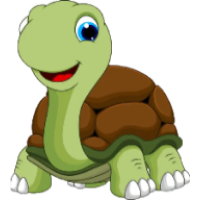
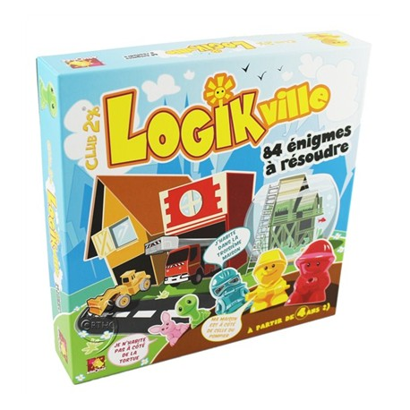

Il s'agit de résoudre les 84 défis en développant vos capacités logiques.
Si vous êtes débutant, nous vous recommandons de ne jouer qu'avec trois maisons. Une fois que vous aurez résolu quelques énigmes ne comportant que trois maisons, vous serez prêt à passer à celles qui en utilisent quatre. Les joueurs expérimentés, eux, joueront avec cinq maisons.
Les niveaux sont triés par ordre croissant, de 1 à 84.
En haut de chaque niveau figurent les personnages et les animaux utilisables.
Le nombre adéquat de maisons se trouve sur le plateau.
En fonction du nombre de maisons, vous aurez différents personnages et animaux disponibles.
| Nombre de maisons : | Personnes : | Animaux : |
| 3 maisons |  | |
| 4 maisons | ||
| 5 maisons |
Quelle que soit la carte choisie, vous aurez toujours à résoudre la même énigme : qui vit dans chaque maison ?
Les indices figurant sur la carte seront chaque fois différents. Ils sont présentés selon un système de symbole que vous n'aurez aucun mal à maîtriser.
Contrainte numéro :
Concernant les deux premières contraintes, une maison normale est représentée comme ceci : De plus, les maisons sont représentées de gauche à droite et de haut en bas. Donc si tu cherches la 5ème maison, c'est la dernière en bas !
Note : dans les défis qui n'utilisent que des personnes, chacune d'entre elles doit être placée dans une maison séparée.
On ne peut pas mettre deux personnes dans la même maison. Dans les défis associant les personnes et les animaux, une personne et un animal peuvent être placés dans la même maison.
Toutefois, on ne peut pas placer deux personnes ou deux animaux dans la même maison.
Êtes-vous certain d'avoir correctement résolu le défi ?
Passez les indices en revue.
Si chacune des conditions est remplie, le défi est résolu !
Chaque défi n'a qu'une solution, et une seule.
Cliquez sur le bouton pour vérifier, le jeu vous indiquera la réponse.
Quand l'énigme est résolue, passez au défi suivant !
Les premiers niveaux vous familiariseront avec la logique requise pour résoudre toutes les énigmes.
Nous vous recommandons donc de ne pas les passer !
Respectez autant que possible l'ordre des niveaux numérotés.
Si vous sautez certaines énigmes, vous aurez peut-être des problèmes pour résoudre des défis plus compliqués par la suite.
Tu as réussi à résoudre les 84 niveaux par toi même
et tu veux plus de challenge ?
L'éditeur de niveaux est fait pour toi ! Crée à ton tour les niveaux que tu souhaites en choisissant
Mais attention, à la fin ton niveau ne doit présenter qu'une seule solution !
Pour t'aider, l'application calcule automatiquement le nombre de solutions et te les affiche, c'est pas génial ?
Marre de toujours jouer avec les mêmes personnages ?
Tu te demandes pourquoi un oiseau doit dormir dans une maison et tu préférerais avoir un poisson ?
Le menu des options est fait pour toi !
C'est un endroit formidable où tu pourras régler la taille de la fenêtre
mais aussi et surtout personnaliser les entités. Tu pourras y
En plus, tu peux y mettre les images que tu veux ! Les gif sont autorisés, tes personnages et animaux peuvent s'animer en jeu !
Alors viens donc essayer cet outil et laisse libre cours à ton imagination !
Et si tu as aimé nos aventures sur ordinateur, n'hésite pas à te procurer la boîte de jeu pour encore plus t'amuser en famille !
Pssst ! C'est disponible à l'achat sur internet ici